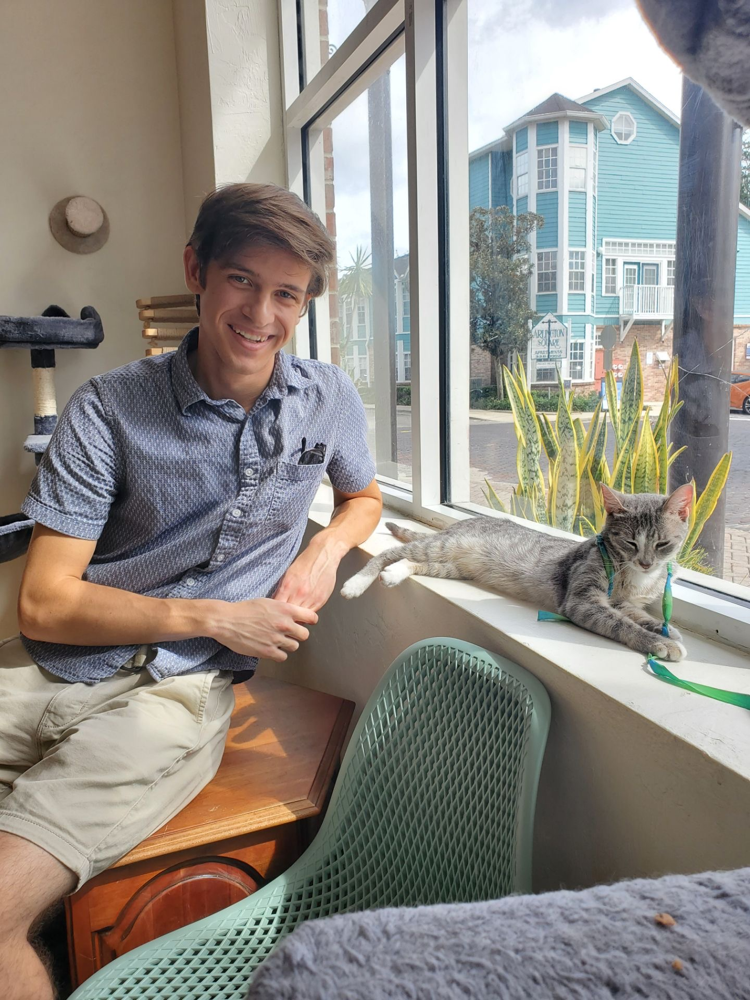

Sean Saliga
 


Hi! I'm Sean, a Physics-addict with hobbies and personal projects in Electronics, Python / other languages, AI, and Machine Learning (ML).
In May of 2023, I graduated from the University of Florida (UF) with a Bachelor of Science in Physics and a Minor in Mathematics, earning Dean's List recognition for the vast majority of my semesters there. While there, I was an Undergraduate Researcher, a team member of Gator Motor Sports, and a member of the Society of Physics Students.
My most recent work experience is as a Junior Electrical Engineer (EE) and my career passions are to continue working as an EE or to learn enough about machine learning that I can become a researcher in this field. I already have made some of my own types of ML models! See my MCNets Python project below to see more about it in my GitHub.
For the final project of one of my courses while at UF, I decided to use one of my own oscillator designs to make a custom radio transmitter and receiver. My (stubborn) goal was to do all of this purely from my own knowledge and experience.
In the end, I was able to produce a stable 50 to 100 MHz oscillator that was attached to a transmitter which could activate the receiver across ~10 m to do something else like turn on some fun lights.